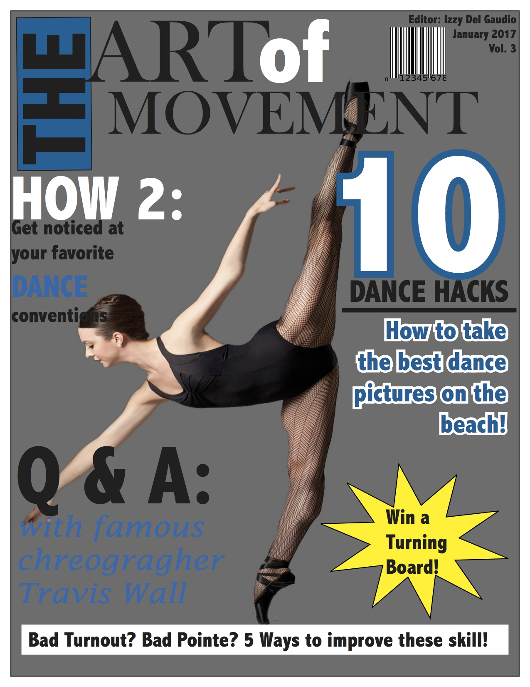

Favorite Project:
This is a magazine cover I created in Illustrator in seventh grade. We learned how to use all the tools in the software and applied it to make an amazing cover for a fake magazine. This was one of my favorite projects because I was able to apply my favorite thing which is dance to a school project. I am so proud of this magazine cover because Mrs.McClure printed it out and put it up on the wall as a good example. Adding on, I really put my best effort into this project and spent alot of time making sure it would come out perfect. Learning a whole new software to create this was difficult and learning how to properly use the tools was tough but in the end it was such a fun and engaging project that I really admired!
